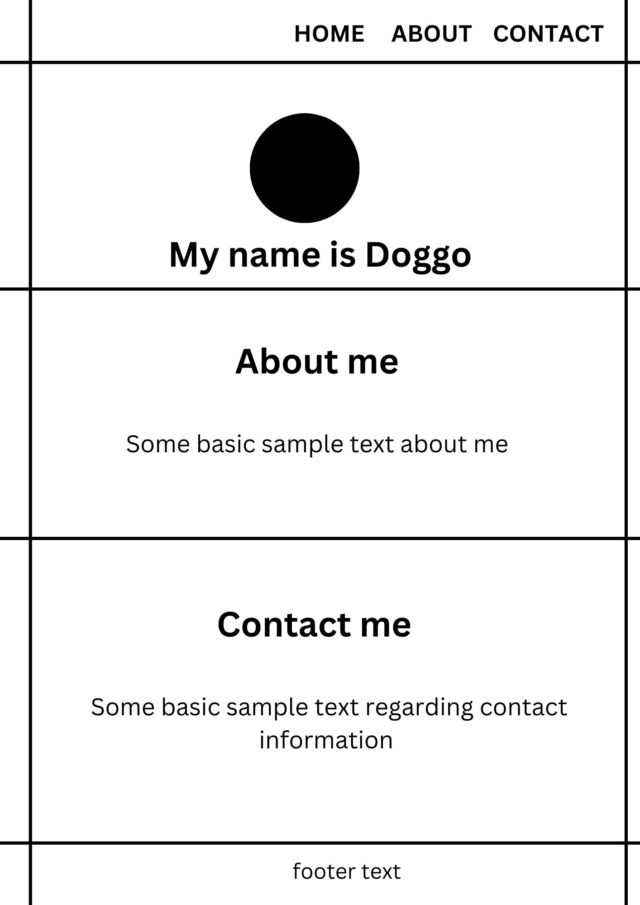
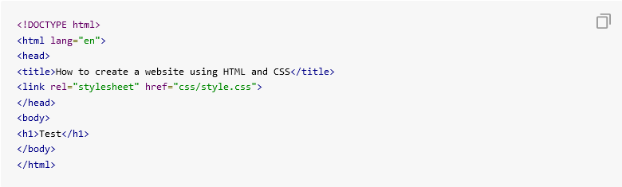
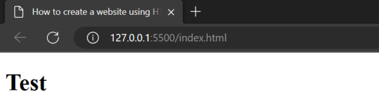
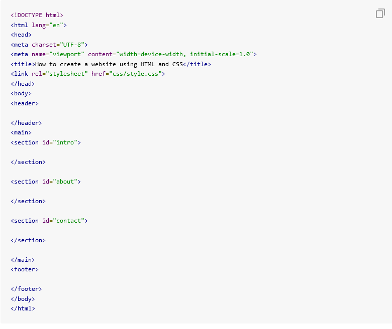
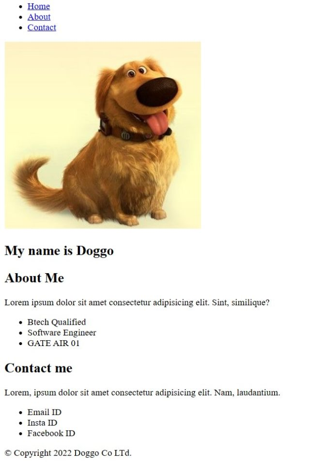
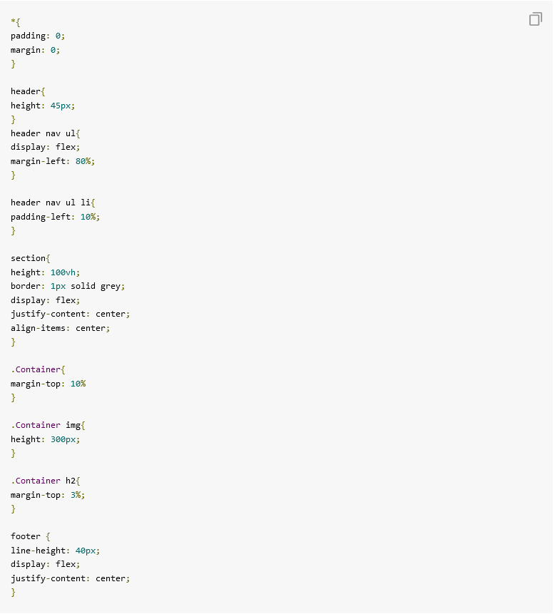
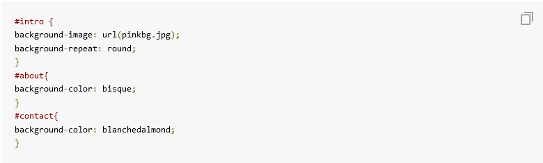

- Step 1: Create a Layout
First create a basic structure of your website as a rough sketch. There are a lot of free online services that will help you design your website. Nonetheless, you must have a basic structure of the website ready.

- Step 2: Set up the boiler code
Create a new project folder and create an empty index.html file inside the folder. Here, add the boilerplate code to the HTML file.

Before starting the actual content add some test content in your HTML file, and run it on the browser to test if the code is working fine.

- Step 3: Create major elements in the layout
Now, create section elements in the HTML file.

Now, if you reload the page, you are going to get an output something like this. You are now going to give this webpage some CSS in the next step to make it good-looking.

- Step 5: Create CSS for the layout
Before adding the depth in the CSS, let us first add some basic CSS to make our webpage look somewhat similar to the layout that we designed in the first step.
Moreover, we linked our HTML file to a CSS file in the second step while writing our boilerplate code. Add the basic layout CSS in the linked CSS file. In this step, we are going to focus on height, width, padding, margin, and display of the sections and images, to make them adjustable according to the webpage.

- Step 7: Add background color and style
In this step,let us add some finishing touches, and our website is ready. Let us add a background image and background colors to the sections.

After completing the entire code of our website, it will look something like this. Note that you can add more CSS to make it further good-looking.